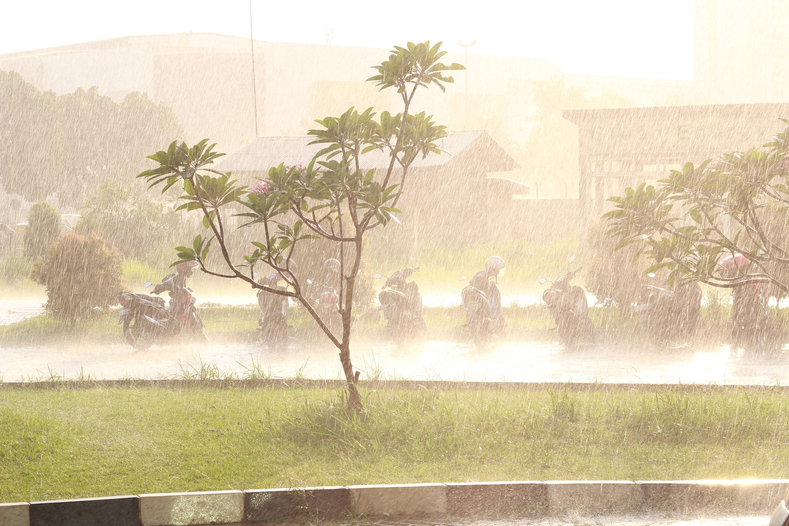
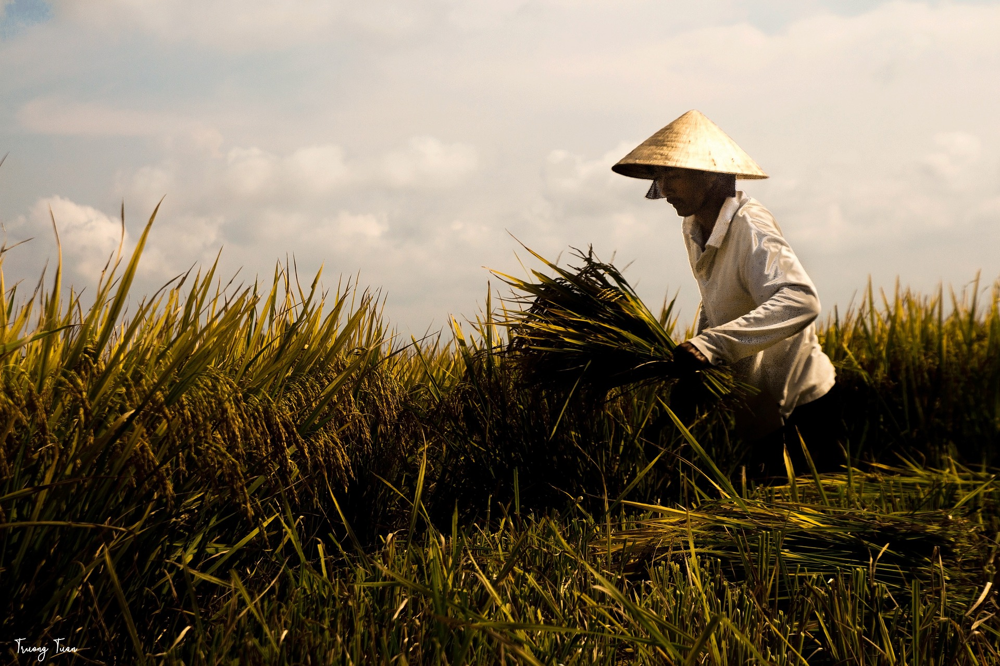

To prevent intensified weather conditions
An example of this is powerful storms. With the continuing increase in the ocean's temperatures, more water is evaporating. This means to more water vapor is being condensed into rain in the sky, thus leading to more powerful rains and storms. For another example, let us consider the intensifying effects of drought. The increasing global temperatures have caused the soil to be drier, thus causing drought's effects to be "intensified." Both powerful storms and worsening drought are bad for us, especially farmers, because they risk our homes and may reduce our food supply. Thus, we have to help fight climate change and prevent these intense weather conditions to avoid the loss of life and the loss of our homes.
To prevent disruption of people's livelihoods
Because of the possibility of intensified weather conditions, such as intensifying drought and stronger storms, the livelihoods of many people will be affected. For example, farmers who rely on good weather so that they can have products to harvest will find the intensifying droughts and storms disruptive. Floods may arise as a result of stronger storms, and the destruction it may cause will definitely disrupt the lives of people. Dealing with climate change now ensures the safety of our future.
